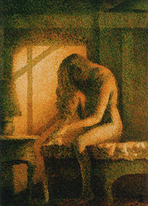

Le
glacis
|
Un glacis ressemble, comme son nom l'indique, à de
la glace. C' est une couche de peinture solide et transparente, souvent teintée
par le peintre. Certains auteurs évoquent la
brillance ou le satiné comme des aspects typiques des glacis, mais de fait il
faut bien se résoudre au fait qu'il existe des glacis mats.
L'étymologie de ce terme ne doit pas nous induire en
erreur : le glacis n'a nullement vocation de "geler" une oeuvre comme pourrait
le faire un vernis. La traduction en allemand de ce mot, Lasur, qui
réfère à l'azur (et donne en français le terme lasure)
a ceci d'intéressant qu'elle évoque la transparence, certainement la propriété
la plus caractéristique des glacis alors que le mot laque a, lui, tellement vu
son sens s'altérer qu'il désigne aujourd'hui des surfaces picturales pouvant
être opaques.
|
Sommaire
Emplois
des glacis
Contraintes
et possibilités
Pas
trop gras si possible
Les
glacis et les laques
Peinture
à l'huile : substituts partiels à l'huile de lin
Types
de glacis
Application
des glacis |
En ce qui concerne les arts décoratifs, on mentionnera
l'apparition au XIXème siècle des "glacis à
l'huile", mélanges d'huile de lin, de craie
et de pigments (un mélange qui ne doit pas forcément être conseillé pour
les travaux artistiques), alors que les "glacis
à l'eau", toujours dans le domaine décoratif, sont des
procédés artisanaux éphémères dont la fabrication en atelier, peu
coûteuse, toujours
pratiquée de nos jours, n'est guère aisée.
Emplois
des glacis
On emploie des glacis dans différentes optiques :
1. tout le tableau est
réalisé en glacis successifs (voir photo ci-dessous : deux couleurs seulement,
ocre jaune et bleu manganèse, ont été utilisées en nombreuses couches sur un
fond blanc, formant des verts, des roux et même des noirs en jouant sur le
faible pouvoir réflecteur des couches transparentes).
2. travail à
l'ancienne : on pose une imprimature
plutôt sombre, puis on revient par-dessus avec du blanc (ou un mélange couleur
du fond + blanc), définissant assez précisément toutes les valeurs
du tableau sous la forme d'une sorte de camaïeu. Il ne reste
plus qu'à appliquer des couleurs en glacis tout en conservant, par transparence, les
valeurs imposées antérieurement.
2 bis. autre travail à l'ancienne, basé sur
des conditions bien particulières : on est dans une situation où il faut isoler un pigment particulièrement
réactif, susceptible de s'altérer s'il est
mis en présence d'autres couleurs. Le procédé a plusieurs intérêts : on pose un glacis par-dessus, mais
aussi, auparavant, en dessous de la couleur instable, tenant compte par ailleurs
de l'évolution des couleurs des différentes couches.
Les peintres du Moyen-âge passaient très souvent un glacis garance (voir laques
anciennes) au-dessus des aplats vermillon,
connaissant bien l'évolution de chacun de ces éléments.

3. autre cas, très courant : le tableau a été réalisé avec des
couleurs opaques. Il s'agit, lors de la finition, de réaliser quelques
corrections chromatiques locales ou bien d'unifier l'ensemble à l'aide d'une
dominante appliquée, encore une fois, par transparence.
Dans tous les cas, souvent, les glacis sont appliqués - et
souvent séchés - à l'horizontale car sauf exceptions, la matière utilisée est
plutôt liquide. Il est possible cependant de travailler sur chevalet en utilisant
* des quantités très faibles
de "jus"
* des adjuvants tels que la cire
(manière vénitienne) et/ou des charges
incolores et des siccatifs pour la peinture à l'huile
* des "couleurs spéciales pour
glacis", également spécifiques à la peinture à l'huile. Elles sont fort
coûteuses.
* des médiums-gels
pour l'acrylique pour travailler "glacé mais pâteux"
* ou en se servant des coulures comme effet pictural.
Une solution de facilité qui peut "placer" ou lasser selon les cas.
Contraintes
et possibilités
Des glacis peuvent être superposés infiniment (voir point
1 ci-dessus). Cela est rendu possible par l'emploi de résines naturelles ou
synthétiques (quel que soit le procédé de peinture) plus que par l'adjonction
massive de corps gras.
En peinture à l'huile,
la technique doit respecter la règle du "gras
sur maigre" et encore plus les temps de séchage, très
déterminants.
le séchage doit être
assez avancé - la surface doit être parfaitement solide et bien sèche - pour
qu'un glacis puisse être appliqué sur un autre glacis. Il est assez conseillé
de n'introduire dans la pâte que la quantité strictement nécessaire de
corps gras comme l'huile de lin, la
térébenthine de Venise et la standolie, surtout dans les premières couches.
Lire passage ci-dessous.
il existe des possibilités de travailler relativement longtemps un glacis
dans le frais (de quelques dizaines de minutes à quelques heures), mais le
comportement du liquide se transforme sensiblement à mesure que le diluant
s'évapore. Ensuite, c'est l'huile qui commence à siccativer, on entre dans le "demi-frais"
et ce "processus de métamorphose" pendant lequel il devient risqué d'intervenir
est bien plus long.
Pour les peintres souhaitant travailler avec précision ou appliquer des
corrections franches à leur glacis, il est très conseillé d'attendre environ
vingt minutes après application avant d'intervenir. La durée de cette
intervention encore "alla
prima" est, on l'a dit, très variable. La quantité de corps gras, de
résines, la présence d'émulsions, le comportement des pigments et la température
ambiante la déterminent.
Cela s'apprécie plus que ça ne se calcule parce que cela dépend de la
nature de l'intervention.
Il reste encore possible dans un demi-frais peu avancé de retirer le
glacis mais plus le temps passe, plus cette opération risque de laisser des
traces sur la couche inférieure. Dans l'ensemble, il s'agit pour le peintre de
faire attention au temps et pour ainsi dire d'être à l'écoute de son glacis.
Un glacis est généralement réalisé à l'aide de diluants enrichis de résines transparentes (contenues
dans des médiums), plus ou moins épaississantes et
solidifiantes, ce qui vaut tant en peinture à l'huile qu'avec les peintures
aqueuses contemporaines.
Pas
trop gras si possible
Le glacis pose un problème récurrent en peinture, particulièrement en
peinture à l'huile mais aussi en techniques mixtes : il doit théoriquement toujours être au
moins aussi gras, sinon plus gras, que la couche
inférieure (règle importante en peinture : gras sur maigre). Il vaut donc
mieux éviter de poser des couches inférieures trop grasses. Pour la même
raison, les "glacis de finition" sont
souvent assez gras (présence de standolie,
notamment).
De plus, la plupart des
résines utilisées pour les glacis à l'huile ont un pouvoir liant qui s'ajoute
ou se substitue partiellement à celui de l'huile. Un glacis très résineux est relativement gras,
mais moins qu'un glacis fortement chargé d'huile. Certaines résines,
même tendres, sont cependant un peu cassantes. C'est pour
cette raison que l'on adjoint quand même assez souvent de l'huile et/ou des oléorésines
en quantités très variables. Nous conseillons cependant de n'utiliser qu'une
dose minime de ces substances-là, surtout pour les premières couches, pour
plusieurs raisons :
* sans cela, le temps de séchage s'allonge
démesurément, ce qui est gênant lorsque l'on souhaite travailler par
couches superposées, d'autant plus que le séchage doit souvent être
opéré à l'horizontale
* risquer d'aller trop vite vers le gras est
inutile, sauf support très souples (coton, toile non tendue, papier mou) et autres cas
particuliers. Le gras est souple, c'est vrai, mais le "relativement maigre"
n'est pas aussi rigide qu'une peinture à la chaux ou à la caséine par exemple,
c'est-à-dire que le gras ne s'impose que dans des cas particulièrement
extrêmes, particulièrement dans les premières couches
* les huiles à peindre sont toutes colorées, de même que les
oléorésines sauf le baume du Canada, que l'on
n'utilise pas n'importe comment. Il faut donc tenir compte du jaunissement
qui s'accroît au fil des couches trop riches en huiles.
Dans le domaine des peintures aqueuses ou à la gomme
laque+éthanol, ces problèmes ne se posent pas.
Le
glacis et les "laques"
Les couleurs de
type "laques", particulièrement
transparentes, sont souvent employées en glacis (voir photo ci-dessous). De nos jours, il s'agit
* de pigments très colorants mais peu
couvrants
(pigments organiques notamment),
nécessitant une charge incolore transparente assez faible,
voire aucune charge
* de pigments plus ou moins colorants mais
opaques (souvent minéraux), pour lesquels l'emploi de charges incolores en quantité un peu plus
importante est nécessaire.

Dans le premier cas, il ne faut pas ajouter trop d'huile (ou autre liant) au
broyage (au liage), rendant la couleur trop grasse car
il s'agit là d'un réflexe normal qu'il faut maîtriser. Il est
possiblement l'une des origines de la réputation de mauvaise siccativité des
laques liées à l'huile.
Dans le second cas, la présence accentuée de la charge incolore peut rendre
nécessaire l'ajout au broyage d'une quantité de liant correspondant à peu près à
celle qui est employée pour un pigment moyen, mais tout dépend de la nature
colloïdale ou
cristalloïde de la charge. Un cristalloïde ne nécessite pas une adjonction
importante de liant mais pose des problèmes de fragilisation alors qu'une charge
colloïde peut à peu près être traitée comme un pigment.
Ces questions ne se posent guère avec les peintures qui sèchent plus rapidement
que le procédé à l'huile.
Peinture
à l'huile : substituts partiels à l'huile de lin
En peinture à l'huile, lorsque c'est le peintre lui-même qui veut rendre plus transparente la
couleur qu'il veut appliquer en glacis, il emploie généralement un médium à
base d'essence et de résine. Par cette opération, il ne rend pas forcément nécessaire un ajout de liant,
comme ce pourrait être le cas s'il employait certaines charges. Si la dilution est telle que le recours à un autre liant
compatible devient nécessaire, il peut employer la méthylcellulose par
exemple, ou bien la cire en très petite quantité. En effet, les
médiums à peindre et les médiums pour glacis
disponibles dans le commerce sont souvent trop gras car chargés d'huile de lin,
entraînant des temps de séchage trop longs... inutilement.
Types
de glacis
Le glacis, la transparence, créent une impression de profondeur et de
mystère. Partant de cette constatation, distinguons trois types de glacis :
* les glacis flous. Ils sont souvent produits, en peinture à l'huile, par
l'adjonction de standolie mais aussi de chaux
en bonne quantité. En ce qui concerne les
peintures aqueuses, un équivalent pourrait être l'agent
diffuseur, en acrylique
* les glacis nets, jouant sur les matières. Le médium cristal, les produits
contenant de la silice colloïdale sont tout
indiqués. La cire, même en quantité
faible, peut également produire ce type d'effets. Certains gels-médiums donnent des résultats à peu près
équivalents en peinture acrylique. Le coup de brosse reste visible
*
les glacis épais, nets ou flous, accentuant l'impression de profondeur. En
peinture à l'huile, ils sont produits à l'aide de médiums-gels, de liants "travaillés" ou de médiums faits maison. En peinture acrylique,
l'emploi de gels épais est tout indiqué pour obtenir ce type d'effets.
Application
des glacis
C'est un vaste sujet. Nous ne nous étendrons pas sur les choix possibles
dans le domaine artistique tellement ils sont nombreux.
Par contre, en peinture décorative, le glacis correspond à une technique un
peu plus définie. Il est généralement réalisé soit avec de la peinture à
l'huile, soit avec un liant à base de bière et de farine, soit avec de l'acrylique adjointe d'un retardateur de séchage.
Généralement, la peinture diluée, mais certainement moins fluide que dans
le domaine artistique (parce qu'il s'agit de traiter des surfaces
systématiquement verticales) est d'abord appliquée à la brosse de manière
grossière.
Elle est alors étalée puis lissée (presque par retrait, en "dépouillé")
à l'aide d'une brosse à adoucir.
Voir aussi Mélange de couleurs et
Vélature.
Retour
début de page